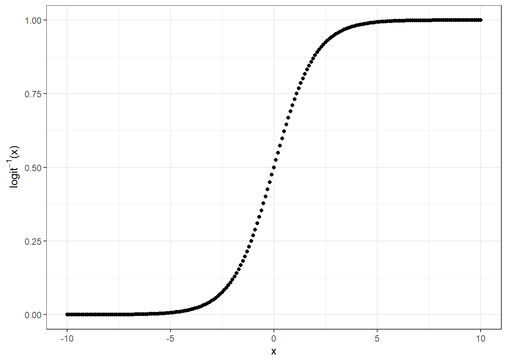
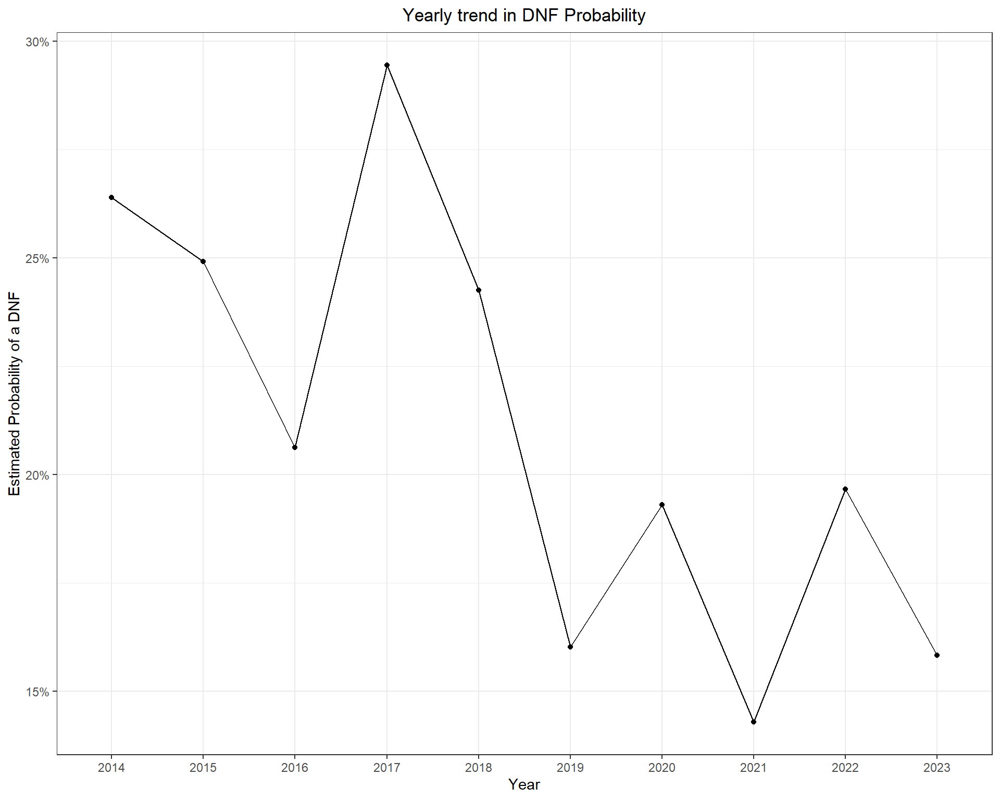
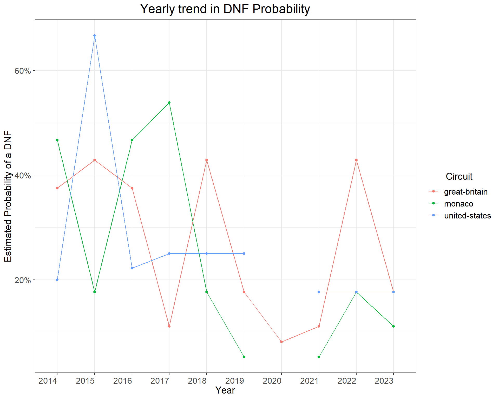
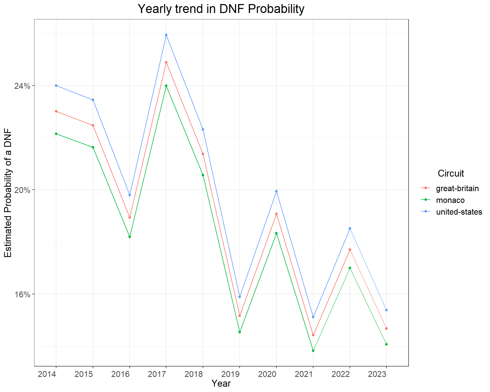
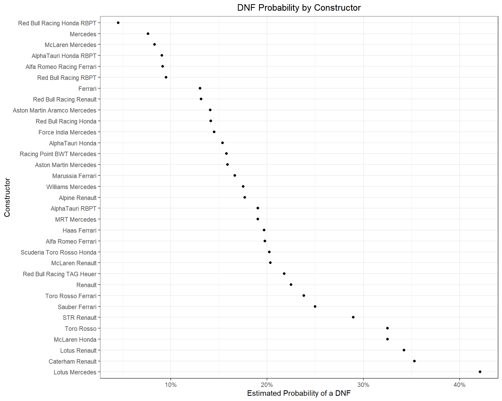
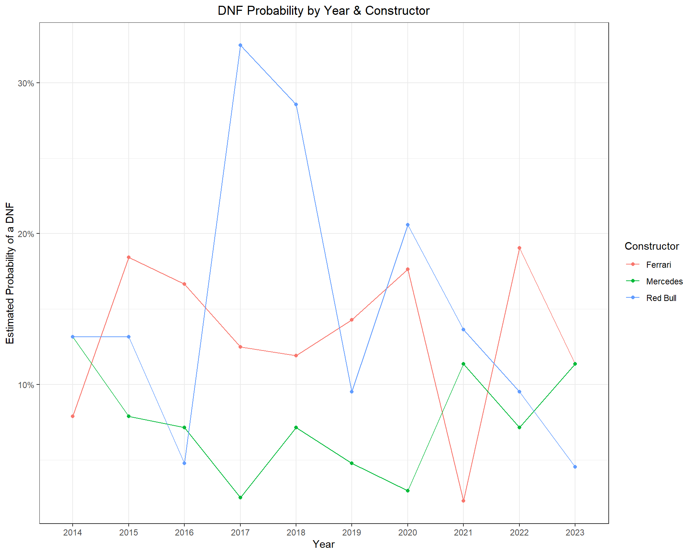
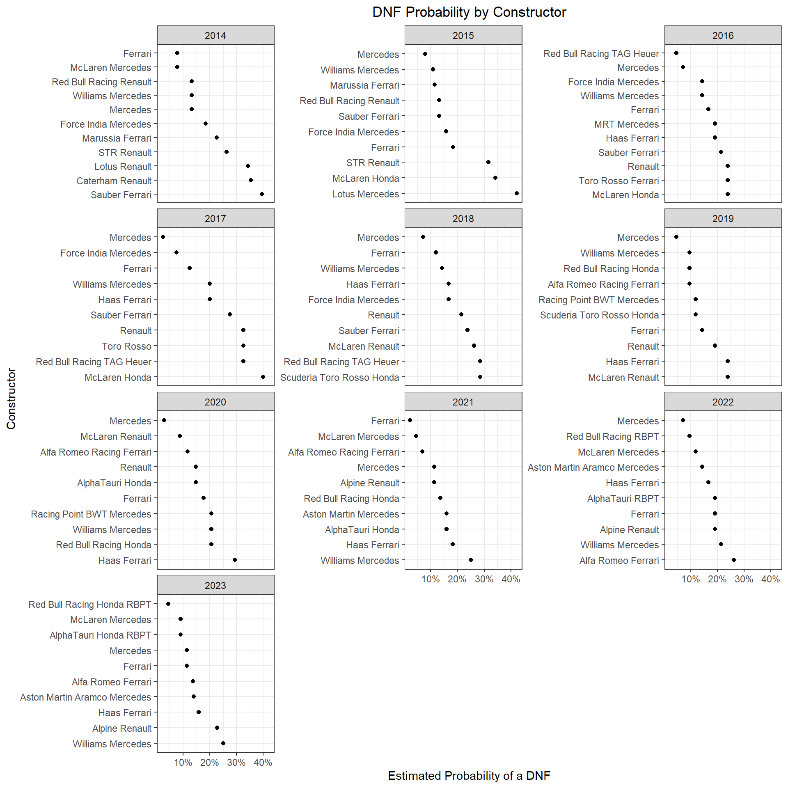
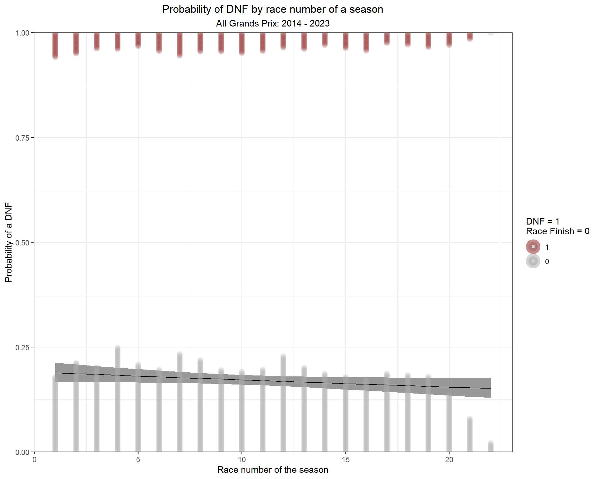
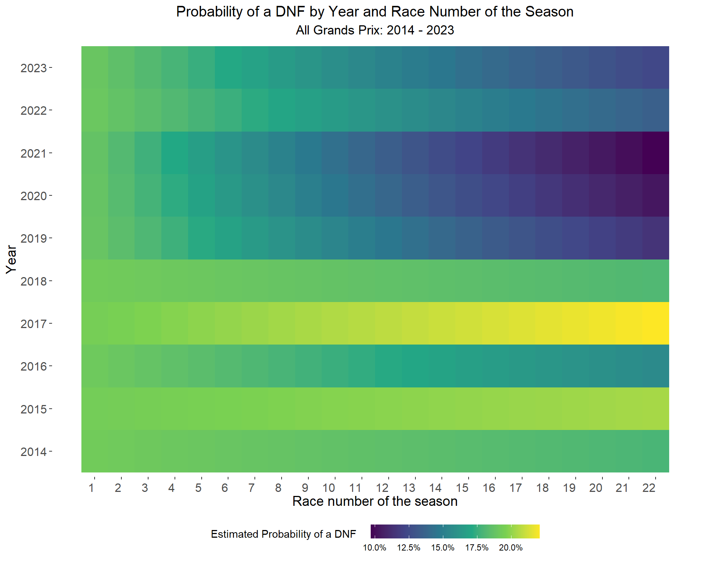

Chapter 7 DNF (Did Not Finish)
There are lots of reasons a car may DNF from a race. Mechanical failure, crashes, and even precautionary considerations can lead to a car retiring early from a race. DNFs are almost always unexpected, and can have substantial influence on the outcome of the race for other drivers (see Abu Dhabi 2021). But, are there any identifiable risk factors for DNFs? For example, are there differences among the constructors or engine suppliers? Are certain drivers more prone to be involved in a crash? We can explore these ideas with a model!
Throughout this chapter, I will be attempting to answer the following question:
What is the probability that a car DNFs?
A DNF, naturally, is a binary event: a car finished the race, or it does not. This is important to note prior to modeling. If we were to try and use a linear model to model this binary response, the predicted outcome could be any number between negative infinity and positive infinity. Which …. doesn’t make sense. Generalized Linear Models (GLM) allow you to build a linear relationship between the response and predictors, even when their underlying relationship is not linear and variance is not constant.
Recall from last chapter that we ran into a scenario where we failed to meet the assumptions of the linear regression model. This happens quite often actually! Without going into too much detail, there are three common situations where linear regression models are a poor choice:
- The response is a count
- The response is binary or a proportion
- The response is positive continuous
7.1 Logistic Regression
A logistic regression model allows me to estimate the effect that a predictor variable (or more than one predictor) has on the probability of a given outcome. It is actually a simpler implementation of the ordinal regression model from last chapter. The ordinal regression model estimates the probability of many ordered levels of an outcome (i.e. P1, P2, P3, etc.), while a logistic regression model estimates the probability of only two possibilities: a car finishes or does not.
A logistic regression model will use a transformation function, the logistic function, that allows us to relate the outcome (finish vs DNF) to a value between 0 and 1. So, the logistic function maps a typical probability range (0,1) to an unbounded range (-infinity, infinity). The logit function is defined mathematically as:
\[logit(x) = log(\frac{x}{1-x})\]
The inverse logit function maps an unbounded range back to a probability range (0,1).
\[logit^{-1}(x) = \frac{e^{x}}{1 + e^{x}}\]
To visualize how the logit and inverse logit functions work, I made the following figures. I create some sample data called x. I then plot x vs logit(x). Hopefully this helps!
Here is a plot of the linear predictor vs linear predictors transformed to probabilities using the inverse logit function.
# create sample data
x <- seq(-10, 10, 0.1)
# apply an inverse logit function to x
inv_logit_x <- exp(x) / (1 + exp(x))
# Plot these two variables
qplot(x, inv_logit_x) +
labs(y=expression(paste(logit^-1,"(x)"))) +
theme_bw()
We can also use the plogis() function to perform the inverse logit transformation. See here:
# Plot these two variables
qplot(x, plogis(x)) +
labs(y=expression(paste(logit^-1,"(x)"))) +
theme_bw()
A logistic regression model should allow us to analyze our data to understand how the probability of a DNF varies across various predictor variables. One research question that I have is:
Does the probability of a DNF vary across years?
Well, in an attempt to answer that question, one could simply calculate the proportion of DNFs from 2014 to 2023. There are better ways!
To demonstrate how to use a logistic regression model to answer this type of question, I will start with an even simpler example. If we were to pool all years together and calculate the proportion of cars that DNF, that calculation would reveal that 17.2% of cars DNF from a race:
mean(races_allyears_dnf$DNF, na.rm = T)## [1] 0.1719205A more statistically sound way to estimate this rate is to use a logistic regression model. The most basic logistic regression model would be an intercept-only model. Notice that the transformed intercept of this model is identical to the manually calculated proportion of 17.2%.
dnf.model.0 <- glm(DNF ~ 1, data = races_allyears_dnf,
family = binomial(link = 'logit'))
# Transform the coefficient to probability scale
plogis(coef(dnf.model.0))## (Intercept)
## 0.1719205Let’s expand this model in the next section.
7.2 Yearly Differences
Ok, back to our original research question! Does the proportion of DNFs vary over time? One would think! I would assume that as a regulation era evolves, the engineers will build increasingly dependable cars. Let’s see if the data backs this up. In the code below, I will fit a logistic regression model using glm() and transform the coefficient estimates using the plogis() function.
dnf.model.1 <- glm(DNF ~ 0 + Year, data = races_allyears_dnf,
family = binomial(link = 'logit'))
# Transform the coefficient to probability scale
data.frame(Probability = plogis(coef(dnf.model.1)))## Probability
## Year2014 0.2088452
## Year2015 0.1994681
## Year2016 0.1709957
## Year2017 0.2275000
## Year2018 0.1952381
## Year2019 0.1380952
## Year2020 0.1617647
## Year2021 0.1250000
## Year2022 0.1642857
## Year2023 0.1366743It looks like the data support this to some degree. Just by looking at this table, it appears that the proportion is trending downward but also bouncing around from year to year. We can plot this data to make it a little more clear:
tidy(dnf.model.1, exp = T) %>%
mutate(term = str_remove(term, "Year")) %>%
ggplot(aes(term, estimate)) +
geom_line(group = 1) +
geom_point() +
theme_bw() +
labs(y = 'Estimated Probability of a DNF',
x = 'Year',
title = 'Yearly trend in DNF Probability') +
scale_y_continuous(labels = scales::percent_format()) +
theme(plot.title = element_text(hjust = 0.5))
If we were to look at the number of DNFs by track, some locations stand out. For instance, Baku, Australia, and the U.S. Grand Prix all have DNF percentages of at least 20% since 2014.
races_allyears_dnf %>%
group_by(Circuit) %>%
summarize(`% of DNFs` = round(mean(DNF, na.rm = T), 3)) %>%
ungroup() %>%
arrange(desc(`% of DNFs`)) %>%
mutate(`% of DNFs` = scales::percent(`% of DNFs`)) %>%
gt()| Circuit | % of DNFs |
|---|---|
| australia | 26.10% |
| azerbaijan | 24.20% |
| germany | 22.10% |
| singapore | 21.50% |
| malaysia | 20.50% |
| saudi-arabia | 20.00% |
| united-states | 20.00% |
| canada | 19.50% |
| great-britain | 19.20% |
| austria | 19.10% |
| monaco | 18.50% |
| italy | 18.30% |
| europe | 18.20% |
| bahrain | 17.90% |
| russia | 16.60% |
| belgium | 16.20% |
| brazil | 15.60% |
| mexico | 15.40% |
| hungary | 15.20% |
| las-vegas | 15.00% |
| styria | 15.00% |
| abu-dhabi | 13.40% |
| netherlands | 13.30% |
| japan | 12.80% |
| france | 12.50% |
| miami | 12.50% |
| spain | 12.30% |
| china | 12.10% |
| qatar | 10.00% |
| turkey | 10.00% |
| portugal | 5.00% |
We can add an interaction term to this model, and make a yearly estimate for each circuit in our data.
dnf.model.2 <- glm(DNF ~ 0 + Year:Circuit, data = races_allyears_dnf,
family = binomial(link = 'logit'))Here’s a comparison of this updated model’s output across a few different circuits:
tidy(dnf.model.2, exp = T) %>%
mutate(term = str_remove(term, "Year")) %>%
separate(term, sep = ':Circuit', c("Year", "Circuit")) %>%
filter(Circuit %in% c('monaco', 'united-states', 'great-britain')) %>%
ggplot(aes(Year, estimate, group = Circuit, col = Circuit)) +
geom_line() +
geom_point() +
theme_bw() +
labs(y = 'Estimated Probability of a DNF',
x = 'Year',
title = 'Yearly trend in DNF Probability') +
scale_y_continuous(labels = scales::percent_format()) +
theme(
axis.title.x = element_text(size = 14),
axis.title.y = element_text(size = 14),
axis.text.x = element_text(vjust = 0.5, hjust=1, size = 12),
axis.text.y = element_text(size = 12),
plot.title = element_text(hjust = 0.5, size = 18),
legend.text = element_text(size = 12),
legend.title = element_text(hjust = 0.5, size = 14))
An alternative to fitting an estimate for each race-year combination is to model both the year and track estimates, but not as an interaction term.
dnf.model.3 <- glm(DNF ~ 0 + Year + Circuit, data = races_allyears_dnf,
family = binomial(link = 'logit'))As we can see in the figure below, this model assumes a consistent yearly effect and adjusts the probability estimate up or down based on the circuit. So, for that rainy 2015 U.S. Grand Prix, this model gives a more sober result.
emmeans(dnf.model.3, ~ Circuit + Year, type = 'response') %>%
as.data.frame() %>%
filter(Circuit %in% c('monaco', 'united-states', 'great-britain')) %>%
ggplot(aes(Year, prob, group = Circuit, col = Circuit)) +
geom_line() +
geom_point() +
theme_bw() +
labs(y = 'Estimated Probability of a DNF',
x = 'Year',
title = 'Yearly trend in DNF Probability') +
scale_y_continuous(labels = scales::percent_format()) +
theme(
axis.title.x = element_text(size = 14),
axis.title.y = element_text(size = 14),
axis.text.x = element_text(vjust = 0.5, hjust=1, size = 12),
axis.text.y = element_text(size = 12),
plot.title = element_text(hjust = 0.5, size = 18),
legend.text = element_text(size = 12),
legend.title = element_text(hjust = 0.5, size = 14))
7.3 Differences by constructor
We could use a similar approach to estimate the probability of a DNF by constructor. One could hypothesize that the car with the best power unit, Mercedes, could run the engine at a more conservative mode, thus reducing the risk of failure. Let’s see if the data shows any significant shifts in DNF probability by constructor.
dnf.model.4 <- glm(DNF ~ 0 + Car, data = races_allyears_dnf,
family = binomial(link = 'logit'))emmeans(dnf.model.4, ~ Car, type = 'response') %>%
as.data.frame() %>%
ggplot(aes(prob, fct_reorder(Car, desc(prob)))) +
geom_line() +
geom_point() +
theme_bw() +
labs(x = 'Estimated Probability of a DNF',
y = 'Constructor',
title = 'DNF Probability by Constructor') +
scale_x_continuous(labels = scales::percent_format()) +
theme(plot.title = element_text(hjust = 0.5))
There certainly appears to be some variability in DNF probability across the various constructors. During the Turbo-hybrid era, Mercedes unquestionably had the best power unit (overall). And according to this data, Mercedes also had the lowest probability of a DNF from 2014 to 2023 (Red Bull was quite reliable in 2023). In fact, McLaren using a Mercedes power unit had the third lowest DNF probability. Does this vary by year?
dnf.model.5 <- glm(DNF ~ 0 + Car:Year, data = races_allyears_dnf,
family = binomial(link = 'logit'))After fitting the model, I’ll focus on the top 3 teams over this ten year period: Mercedes, Ferrari, and Red Bull. It looks like Mercedes had consistently low DNF rates, while Red Bull experienced an improvement over the last few years.
emmeans(dnf.model.5, ~ Car:Year, type = 'response') %>%
as.data.frame() %>%
filter(!is.na(Year),
!is.na(prob),
Car %in% c('Mercedes', 'Ferrari',
'Red Bull Racing Honda RBPT', 'Red Bull Racing RBPT', 'Red Bull Racing Renault', 'Red Bull Racing Honda', 'Red Bull Racing TAG Heuer')) %>%
mutate(constructor = case_when(
Car != 'Mercedes' & Car != 'Ferrari' ~ 'Red Bull',
Car == 'Mercedes' ~ 'Mercedes',
Car == 'Ferrari' ~ 'Ferrari')) %>%
ggplot(aes(Year, prob, group = constructor, col = constructor)) +
geom_path() +
geom_point() +
theme_bw() +
labs(y = 'Estimated Probability of a DNF',
col = 'Constructor',
title = 'DNF Probability by Year & Constructor') +
scale_y_continuous(labels = scales::percent_format()) +
theme(
axis.title.x = element_text(size = 14),
axis.title.y = element_text(size = 14),
axis.text.x = element_text(vjust = 0.5, hjust=1, size = 12),
axis.text.y = element_text(size = 12),
plot.title = element_text(hjust = 0.5, size = 18),
legend.text = element_text(size = 12),
legend.title = element_text(hjust = 0.5, size = 14))
Here’s a look at each all teams, separated by year:
library(tidytext)
emmeans(dnf.model.5, ~ Car:Year, type = 'response') %>%
as.data.frame() %>%
filter(!is.na(prob)) %>%
group_by(Year) %>%
mutate(rank = rank(prob)) %>%
ungroup() %>%
mutate(constructor = reorder_within(Car, desc(rank), Year)) %>%
ggplot(aes(prob, constructor)) +
geom_line() +
geom_point() +
theme_bw() +
labs(x = 'Estimated Probability of a DNF',
y = 'Constructor',
title = 'DNF Probability by Constructor') +
scale_x_continuous(labels = scales::percent_format()) +
theme(plot.title = element_text(hjust = 0.5)) +
facet_wrap(~ Year, scales = 'free_y', ncol = 3) +
scale_y_reordered()
7.4 DNFs by race of the season
Another possible explanatory variable of DNFs is race number of the season. There is probably more uncertainty about the engineering of the car at the beginning of a season. So, one could hypothesize that the probability of DNF’ing decreases over the course of a season. Let’s try and model this idea.
First, we’ll need to label each race in chronological order. For example, Bahrain was race #1 in 2021, 2022, and 2023.
# Number each race during each of our ten years
circuit_numbers <- races_allyears_dnf %>%
distinct(Year, Circuit) %>%
group_by(Year) %>%
mutate(race_number = 1:n())
# Add the race number to our race result dataframe
races_allyears_dnf_numbered <- races_allyears_dnf %>%
left_join(circuit_numbers, by = c('Year', 'Circuit'))We can fit a model to our data using race number of the season as a single predictor variable.
dnf.model.6 <- glm(DNF ~ race_number, data = races_allyears_dnf_numbered,
family = binomial(link = 'logit'))If we look at the summary output below, we can see that the p-value is > 0.05, demonstrating that this is not a statistically significant at the 0.05 level. What does this mean? See the text box below for more detail and resouces on p-values.
Interpreting p-values
What is a p-value? My favorite definition is provided in Statistics: Unlocking the Power of Data by Lock, Lock, Lock, Lock, and Lock. (It’s a family of statisticians with the last name Lock):
p-value: the proportion of sample, if the null hypothesis is true, that would give a statistic as extreme, or more extreme, as the observed sample.
Essentially, we use the p-value to measure strength of evidence, in a statistical sense. It can describe how unusual our data is. If our data is very unusual, it suggests there is evidence of a real relationship. I am taking some liberties with this explanation, so if you are interesting in legitimately learning about hypothesis testing and p-values, I highly recommend reading the Lock book and visiting this fantastic simulator:
# print summary
summary(dnf.model.6)##
## Call:
## glm(formula = DNF ~ race_number, family = binomial(link = "logit"),
## data = races_allyears_dnf_numbered)
##
## Deviance Residuals:
## Min 1Q Median 3Q Max
## -0.6471 -0.6290 -0.6078 -0.5838 1.9418
##
## Coefficients:
## Estimate Std. Error z value Pr(>|z|)
## (Intercept) -1.44469 0.08239 -17.534 <2e-16 ***
## race_number -0.01255 0.00712 -1.762 0.078 .
## ---
## Signif. codes: 0 '***' 0.001 '**' 0.01 '*' 0.05 '.' 0.1 ' ' 1
##
## (Dispersion parameter for binomial family taken to be 1)
##
## Null deviance: 3785.2 on 4123 degrees of freedom
## Residual deviance: 3782.0 on 4122 degrees of freedom
## AIC: 3786
##
## Number of Fisher Scoring iterations: 4# exponentiate the coefficients
exp(cbind(OR = coef(dnf.model.6), confint(dnf.model.6)))## OR 2.5 % 97.5 %
## (Intercept) 0.2358199 0.2003353 0.2767322
## race_number 0.9875320 0.9738144 1.0013839So, let’s just accept that these results indicate a non-significant predictor in race number. What could cause that? For one, DNFs in this dataset include both crashes and mechanical failures. Obviously crashes should be more random, while mechanical failures may not be.
Nonetheless, this is a book about data visualization. So… let’s at least plot these results.
First, I’ll need to tidy of some model predictions for this model.
# define the new data
new.data.logreg <- tibble(race_number = seq(1, 22, 1))
# compute the fitted lines and SE's
predictions.model6 <- predict(dnf.model.6,
newdata = new.data.logreg,
type = "link",
se.fit = TRUE) %>%
data.frame() %>%
mutate(ll = fit - 1.96 * se.fit,
ul = fit + 1.96 * se.fit) %>%
dplyr::select( -se.fit) %>%
mutate_all(plogis) %>%
bind_cols(new.data.logreg)And then, we can plot observed data along with the logistic regression model fit line using this code:
predictions.model6 %>%
ggplot(aes(x = race_number)) +
geom_ribbon(aes(ymin = ll, ymax = ul),
alpha = 0.5) +
geom_line(aes(y = fit)) +
stat_dots(data = races_allyears_dnf_numbered,
aes(y = DNF,
side = ifelse(DNF == 0, "top", "bottom"), col= factor(DNF)),
scale = 0.25, size = 5, alpha = 0.1, show.legend = T) +
scale_color_manual(breaks = c(1,0),values = c("firebrick4", "darkgrey")) +
scale_y_continuous("Probability of a DNF",
expand = c(0, 0)) +
labs(x = 'Race number of the season',
color="DNF = 1 \nRace Finish = 0",
title = 'Probability of DNF by race number of a season',
subtitle = 'All Grands Prix: 2014 - 2023') +
guides(colour = guide_legend(override.aes = list(alpha = 0.5, size = 0.5))) +
theme_bw() +
theme(plot.title = element_text(hjust = 0.5),
plot.subtitle = element_text(hjust = 0.5))
This figure perhaps further explains the reason behind the insignificant p-value. There is no meaningful trend in the proportion of DNFs over the course of a racing season.
Adding dots to a ggplot
In the figure above, I used stat_dots() to describe the distribution of data along the top and bottom of the x-axis. stat_dots() is one of many very useful functions included in the ggdist R package. The ggdist package provides a flexible set of ggplot2 geometries and statistics designed especially for visualizing distributions and uncertainty.
For more information on plotting dots with ggdist read this great article:
Even though this model was a dud, we can attempt to add some clarity by including a year x race number interaction term. This updated interaction model will estimate a race number coefficient for each year of our data (2014 - 2023).
dnf.model.7 <- glm(DNF ~ race_number:Year, data = races_allyears_dnf_numbered,
family = binomial(link = 'logit'))
# print summary
summary(dnf.model.7)##
## Call:
## glm(formula = DNF ~ race_number:Year, family = binomial(link = "logit"),
## data = races_allyears_dnf_numbered)
##
## Deviance Residuals:
## Min 1Q Median 3Q Max
## -0.7011 -0.6438 -0.6067 -0.5360 2.1296
##
## Coefficients:
## Estimate Std. Error z value Pr(>|z|)
## (Intercept) -1.432272 0.084067 -17.037 <2e-16 ***
## race_number:Year2014 -0.004151 0.013219 -0.314 0.7535
## race_number:Year2015 0.003021 0.012967 0.233 0.8158
## race_number:Year2016 -0.011753 0.011620 -1.011 0.3118
## race_number:Year2017 0.007720 0.011900 0.649 0.5165
## race_number:Year2018 -0.003605 0.011632 -0.310 0.7566
## race_number:Year2019 -0.027829 0.012974 -2.145 0.0320 *
## race_number:Year2020 -0.033301 0.021577 -1.543 0.1227
## race_number:Year2021 -0.036300 0.014261 -2.545 0.0109 *
## race_number:Year2022 -0.019308 0.013265 -1.456 0.1455
## race_number:Year2023 -0.023999 0.012037 -1.994 0.0462 *
## ---
## Signif. codes: 0 '***' 0.001 '**' 0.01 '*' 0.05 '.' 0.1 ' ' 1
##
## (Dispersion parameter for binomial family taken to be 1)
##
## Null deviance: 3785.2 on 4123 degrees of freedom
## Residual deviance: 3766.8 on 4113 degrees of freedom
## AIC: 3788.8
##
## Number of Fisher Scoring iterations: 4When we look at the summary output from the model, some years are significant while most are not. Oy vey!
But, I’m not going to let this stop us from creating a cool figure. So, let’s proceed with a visualization.
Before plotting, I’ll need to construct a prediction grid, make predictions using the model, and then tidy up the predictions ina dataframe.
# Construct a prediction grid
model.grid <- expand.grid(race_number = seq(1, 22, 1),
Year = c('2014', '2015', '2016', '2017', '2018', '2019', '2020', '2021', '2022', '2023'))
model.grid$prob <- predict(dnf.model.7, type='response', newdata=model.grid)
# compute the fitted lines and SE's
dnf.model.lines <- predict(dnf.model.7,
newdata = model.grid,
type = "link",
se.fit = TRUE) %>%
data.frame() %>%
mutate(ll = fit - 1.96 * se.fit,
ul = fit + 1.96 * se.fit) %>%
dplyr::select( -se.fit) %>%
mutate_all(plogis) %>%
bind_cols(model.grid) %>%
mutate(uncertainty = ul-ll)Now, I’ll try plotting the model as a grid space, colored by the probability of a DNF.
ggplot(dnf.model.lines) +
geom_tile(aes(race_number, Year, fill=prob)) +
scale_fill_viridis_c(labels = scales::percent_format())+
labs(x = 'Race number of the season',
y = 'Year',
fill= 'Estimated Probability of a DNF',
title = 'Probability of a DNF by Year and Race Number of the Season',
subtitle = 'All Grands Prix: 2014 - 2023') +
theme_bw() +
theme_tufte(base_family="Helvetica") +
theme(plot.title = element_text(hjust = 0.5, size = 15),
plot.subtitle = element_text(hjust = 0.5, size = 13),
legend.position = 'bottom',
legend.spacing.x = unit(0.5, 'cm'),
axis.title.x = element_text(size = 14),
axis.title.y = element_text(size = 14),
axis.text.x = element_text(vjust = 0.5, hjust=1, size = 12),
axis.text.y = element_text(size = 12)) +
scale_x_continuous(labels = seq(1, 22, 1),
breaks = seq(1, 22, 1)) +
guides(fill = guide_colorbar(barwidth = 12,
barheight = 1.0,
title.vjust = 0.75)) 
Pretty Interesting! Despite the varying amounts of statistical significance, this visualization does a good job of describing how DNF probability varies over the course of each season. For instance, in the early years of the turbo-hybrid era, DNFs were consistently high. The probability then proceeds to drop off toward the end of the era in 2019, 2020, and 2021. We see the same type of progression repeat itself under the new ground effects regulations in 2022 and 2023.